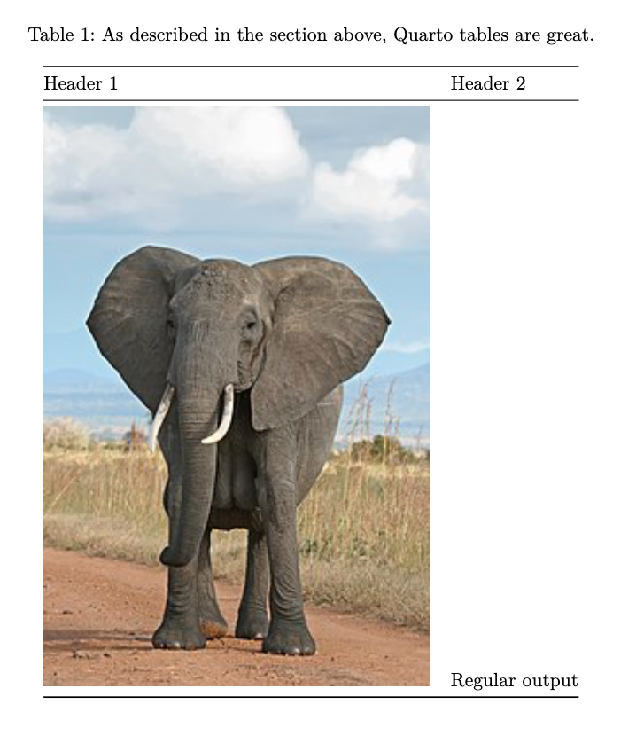

Quarto includes a number of features aimed at making it easy to to author and customize markdown table output, including:
Specifying column alignment and widths.
Providing captions, subcaptions, and cross-references.
Generating tables dynamically from executable code cells.
This article covers using these features in-depth.
Markdown Tables
The most commonly used markdown table is known as a pipe table. Pipe tables support specifying per column alignment as well as captions. For example:
| Default | Left | Right | Center ||---------|:-----|------:|:------:|| 12 | 12 | 12 | 12 || 123 | 123 | 123 | 123 || 1 | 1 | 1 | 1 |: Demonstration of pipe table syntax
Demonstration of pipe table syntax
Default
Left
Right
Center
12
12
12
12
123
123
123
123
1
1
1
1
The beginning and ending pipe characters are optional, but pipes are required between all columns. The colons indicate column alignment as shown. The header cannot be omitted, however you can simulate a headerless table by including a header with blank cells.
Since the pipes indicate column boundaries, columns need not be vertically aligned, as they are in the above example. So, this is a perfectly legal (though ugly) pipe table:
The cells of pipe tables cannot contain block elements like paragraphs and lists, and cannot span multiple lines. If a pipe table contains a row whose markdown content is wider than the column width (see columns option), then the table will take up the full text width and the cell contents will wrap, with the relative cell widths determined by the number of dashes in the line separating the table header from the table body.
For example ---|- would make the first column 3/4 and the second column 1/4 of the full text width. On the other hand, if no lines are wider than column width, then cell contents will not be wrapped, and the cells will be sized to their contents.
Using Bootstrap classes
Bootstrap table classes given as attributes next to a table caption are inserted into the <table> element. The classes permitted are those that apply expressly to the entire table, and these are: "primary", "secondary", "success", "danger", "warning", "info", "light", "dark", "striped", "hover", "active", "bordered", "borderless", "sm", "responsive", "responsive-sm", "responsive-md", "responsive-lg", "responsive-xl", "responsive-xxl". For example, the following Markdown table will be rendered with row stripes and the rows will also be highlighted on hover:
| fruit | price ||--------|--------|| apple | 2.05 || pear | 1.37 || orange | 3.09 |: Fruit prices {.striped .hover}
Fruit prices
fruit
price
apple
2.05
pear
1.37
orange
3.09
Authoring
For simple tables with only a few cells it’s straightforward to create them directly in markdown. As tables get larger, it makes sense to use an authoring tool. Some table authoring tools to consider include:
Visual editor for .qmd files with table editing support.
Column Widths
Above we describe a means of specifying column widths using the relative number of dashes in each column header (e.g., ---|- to get a 75% / 25% split for a two-column table).
You can also explicitly specify columns widths using the tbl-colwidths attribute or document-level option. For an individual markdown table, add the attribute after the caption. For example:
| fruit | price ||--------|--------|| apple | 2.05 || pear | 1.37 || orange | 3.09 |: Fruit prices {tbl-colwidths="[75,25]"}
Fruit prices
fruit
price
apple
2.05
pear
1.37
orange
3.09
If your table doesn’t have a caption, then you can still specify only tbl-colwidths:
| fruit | price ||--------|--------|| apple | 2.05 || pear | 1.37 || orange | 3.09 |: {tbl-colwidths="[75,25]"}
fruit
price
apple
2.05
pear
1.37
orange
3.09
Column widths can also be specified at the document level (e.g., to have uniform widths across a set of tables):
::: {#tbl-panel layout-ncol=2}| Col1 | Col2 | Col3 ||------|------|------|| A | B | C || E | F | G || A | G | G |: First Table {#tbl-first}| Col1 | Col2 | Col3 ||------|------|------|| A | B | C || E | F | G || A | G | G |: Second Table {#tbl-second}Main Caption:::See @tbl-panel for details, especially @tbl-second.
渲染成 HTML 时看起来是这样的：
请注意，表格的 “主标题”是作为包含 div 的最后一个块提供的。
Caption Location
By default, table captions are positioned above tables. You can modify this behavior using the tbl-cap-location option. For example:
---tbl-cap-location: top---
Note that this option is specified at the top level so that it can be shared by both PDF and HTML formats. If you are only targeting a single format you can place it alongside other format specific options.
Valid values for the caption location include:
Value
Description
top
Position the caption above the table.
bottom
Position the caption below the table.
margin
Position the caption in the margin.
See the article on Article Layout for additional details on placing captions in the margin.
Computations
All of the options described above work for tables produced by executable code cells. For example, here we use the Python tabulate package along with the Markdown() function from the IPython display module to print a markdown table:
Note that we use the display() function imported from IPython so that we can render multiple outputs from a single cell (by default cells only output their last expression).
Grid tables are a more advanced type of markdown tables that allow arbitrary block elements (multiple paragraphs, code blocks, lists, etc.). For example:
The row of =s separates the header from the table body, and can be omitted for a headerless table. Cells that span multiple columns or rows are not supported.
Alignments can be specified as with pipe tables, by putting colons at the boundaries of the separator line after the header:
+---------+--------+------------------+| Right | Left | Centered |+========:+:=======+:================:+| Bananas | $1.34 | built-in wrapper |+---------+--------+------------------+
Which looks like this when rendered to HTML:
Right
Left
Centered
Bananas
$1.34
built-in wrapper
For headerless tables, the colons go on the top line instead:
+----------:+:----------+:--------:+| Right | Left | Centered |+-----------+-----------+----------+
Which looks like this when rendered to HTML:
Right
Left
Centered
Note that grid tables are quite awkward to write with a plain text editor (because unlike pipe tables, the column indicators must align). Here are some tools that can assist with creating grid tables:
Tables Generator’s Plain Text mode with Use reStructuredText syntax enabled
HTML Tables
Quarto can process HTML tables in htmlRawBlock nodes (i.e., {=html}) and convert them to Markdown tables, regardless of the output format (intentionally including non-HTML formats). As a result, you can use HTML table syntax in your documents and it will be converted to Markdown syntax for all formats. Additionally, libraries that emit computational tables in HTML format can work in other output formats.
For example, consider the following raw HTML block:
```{=html}<table> <caption>As described in the section above, Quarto tables are great.</caption> <thead> <tr> <th>Header 1</th> <th>Header 2</th> </tr> </thead> <tbody> <tr> <td><img src="https://upload.wikimedia.org/wikipedia/commons/thumb/3/37/African_Bush_Elephant.jpg/220px-African_Bush_Elephant.jpg" alt="African Bush Elephant" /></td> <td>Regular output</td> </tr> </tbody></table>```
When rendered, this results in the following output for HTML and PDF formats:
HTML Output
As described in the section above, Quarto tables are great.
Header 1
Header 2
Regular output
PDF Output

In addition, Quarto supports the specification of embedded Markdown content in tables. This is done by providing a data attribute qmd or qmd-base64 in an embedded span or div node. These nodes can appear anywhere that such content is allowed: table headers, footers, cells, captions, etc.
For example, the following table includes a cross reference, markdown formatting and a shortcode:
## HTML Tables Example {#sec-html-tables}```{=html}<table> <caption><span data-qmd="As described in [Section -@sec-html-tables], Quarto are great."></span></caption> <thead> <tr> <th><span data-qmd="_Header 1_"></span></th> <th><span data-qmd="_Header 2_"></span></th> </tr> </thead> <tbody> <tr> <td><span data-qmd="{{< video https://www.youtube.com/embed/wo9vZccmqwc >}}"></span></td> <td>Regular output</td> </tr> </tbody></table>```
It’s possible that Quarto’s processing of HTML tables may interfere with the HTML produced computationally with table packages in R and Python (or other supported languages).
You can disable Quarto’s HTML table processing at a document level or project level with the option html-table-processing:
---format:html:html-table-processing: none---
This option is also available as a code cell option for Knitr and Jupyter, e.g.
```{r}#| html-table-processing: none# R Code that generates an HTML table```
To disable Quarto’s HTML table processing for parts of a document use a div with the attribute html-table-processing="none":
::: {html-table-processing="none"}Content with HTML tables you don't want processed.:::
Library authors
If you are the author of a library that emits HTML tables you might like to disable Quarto’s processing of HTML tables by adding the attribute data-quarto-disable-processing="true" to the <table> element. For example: